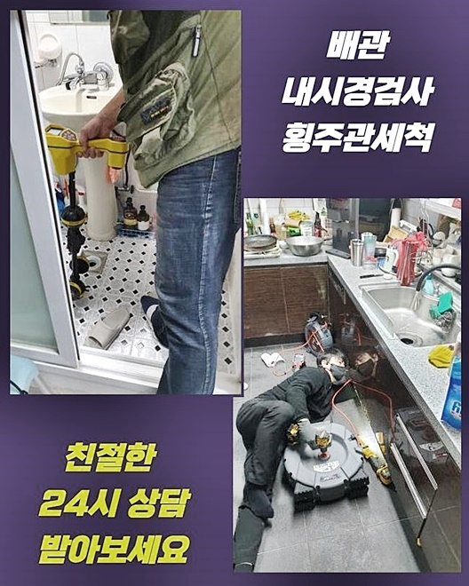
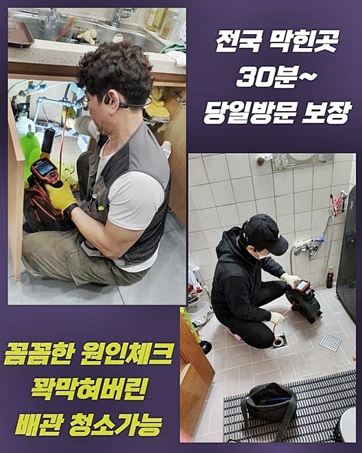
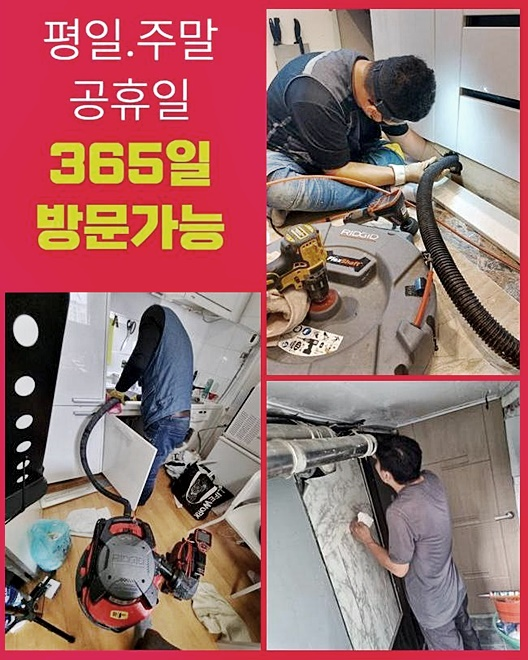
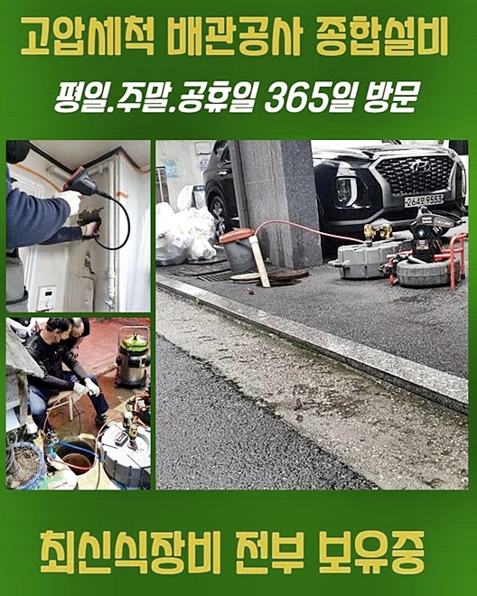
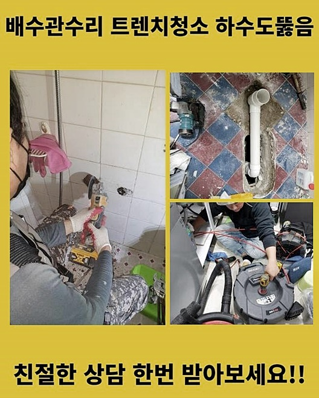
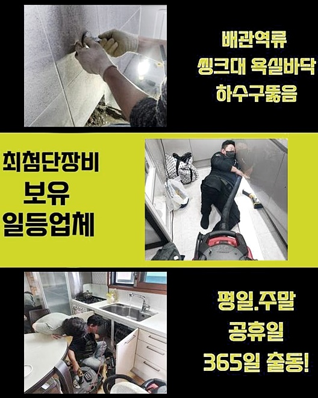

🏠 고양시 토당동씽크대뚫음 원신동 배수구뚫기 배관전문
용인시 처인구 배관막힘 전문 시공 후기

📋 작업 개요
- 위치: 용인시 처인구, 수원시 영통구, 화성시 동탄
- 서비스 유형: 배관막힘, 고압세척, 내시경점검
- 작업 일시:
- 업체명: 하수구수사대 (010-5615-2118)
🔍 문제 상황
고양시 토당동씽크대뚫음 원신동 배수구뚫기 배관전문
배관이 막혀버리는 이유는 많습니다
두발뭉치나 음식 건더기로 인해 발현되기도 하고 기름슬러지가 배수관 구석쪽에 적층되고 세월이 지나가서 단단하게 경화돼는 현장도 예상외로 많답니다
금번엔 배관트러블이 일어난 지점을 설명드리겠습니다
여기는 개수대 막힘이 빈번하게 발발하여서 검진을 요망하셨는데요
이러한 문제가 생겼을 때에 각종 화학제품이나 끓인 물 혹은 외부적인 충격을 가하여 문제를 타파하고자 하는 고객분들이 많죠
사소한 트러블이라면 처리가 가능하겠으나 다각적 까닭으로 차단된 경우에는 혼자서 고쳐내기는 난망합니다
이번에 간 곳은 주방의 하단부에서 유난히 탁수가 잦게 삼출되고 파이프쪽에서도 통수가 되지 않아서 물넘침이 나타나는 형국이었습니다
주방공간은 여과통이 설비돼 있었기에 설거지 과정에서 방출되는 잔재를 일차로 밭치고 나머지만 배수관으로 흘러나가고 있었습니다
그러나 자그마한 노폐물이나 유분이 함유된 불순물 같은 것들은 걸러지지 않고 배수관으로 유입되죠
이런 잔재들이 점점 파이프에 누적되면 안에서 오수가 빠져나갈 수 있는 영역이 지속적으로 옹색하게 변하여 배관트러블이 일어나요
보다 구체적 문제점을 간파하기 위해 배관내시경을 내부로 집어넣고 안쪽 광경을 조사하기로 결정했어요
주방공간의 파이프는 인접한 바닥부분으로 연결된 상태였답니다

🔎 원인 분석
💡 전문가 진단: 정밀 진단 장비를 사용하여 슬러지의 고착 여부를 판명하고 타격/세척 작업을 실시했습니다.
그렇기에 이 문제를 수선하기 위하여 하부장쪽의 공간을 뚫어서 조사를 할 필요가 있죠
다만 이곳과 같이 파이프와 통하는 바닥부위에 다가서기 무난한 형태라면 추가적인 제거시공은 생략가능합니다
그러나 대략적인 건물 형태를 분석한 후 일상적인 수리가 여의찮은 모습으로 이뤄진 주방공간은 타공이 요망되기도 합니다
구조물을 일부 절단하는 작업은 고객님 댁에 방문하여 관련된 모습을 관측한 후에 진행되며 해당되는 모든 과정은 수리 전 손님께 고지를 해드린 다음에 실행합니다
내시경카메라를 동원하여 관측한 관로의 안쪽에는 많은 슬러지가 잔존해 있었죠
고착화된 기름층으로 말미암아 주방에서 발생한 탁수가 배출되지 못한 거였죠
일반적으로 기름층은 수분에 복합되지 않기 때문에 배수관에 기름슬러지가 흘러들면 거리낌없이 사라지는 것이 아닌 하수관 하부에 끈적한 형태로 누적되기 쉬운데요
거기에 더해 다른 이물까지 진입하면 하수관의 측면에 강력하게 감겨버리기에 저절로 괜찮아지기 무망하답니다
아파트에 사시는 분들은 해당 사안에 대한 해결의 일환으로 더운 물을 가득 채워 뚫어보려 시도해보셨을 거예요
생각과 달리 해당 방식은 되레 관로에 좋지 않은 파장을 전달하기도 합니다
보통 아파트나 빌라 안에 매립되는 하수관은 거개 열가소성 플라스틱 종류인데 이건 고온에 취약하다고 알려져 있답니다
따라서 수돗물을 데워서 투입해버리면 배수관이 무르게 되어서 부러지거나 파괴되기도 하죠
이 때문에 끓인 물 말고 구조적인 변화를 꾀하여 안전히 슬러지를 쇄소하는 모습이 배수관 정체현상을 고치는 키라고 볼 수 있습니다

🔧 작업 과정
이 문제를 안전하게 수선할 수 있는 기계는 플렉스샤프트입니다
이것은 내측에 머물던 이물을 파쇄하는 용도이며 노즐과 노커 등으로 구성되어있고 사용자가 전원을 키고 기기를 움직이게 유도하면 체인 형태의 부품이 하수관의 이물들을 떼어줍니다
배수관에는 별다르게 고장을 유발하지 않는 기계이지만 어떤 사람이 조작하는지에 따라서 종종 트러블이 발현될 수 있습니다
그러므로 저희측에서도 긴장감을 풀지 않고 업무를 이행하고 있습니다
수년간 누증된 기름물질은 10회 미만의 스케일링으론 소쇄하기에는 무리입니다
그렇기 때문에 반복적인 업무를 바탕으로 속행해야 하죠
물막힘과 역류 등을 촉발하던 노폐물들을 샤프트기기를 동원해 빠르게 소제하면 점진적으로 깔끔한 상태의 관로로 변화합니다
중간중간 내시경카메라를 사용하여 쌓인 이물질의 양을 검점하곤 합니다
다수의 유분이 가득찼던 배수관이 청결해졌다는 걸 확인하실 수가 있죠
작은양의 침전물이라고 할지라도 하수관에 잔재한다면 몇 주 지난 뒤에 또다시 하수관정체가 일어나는데요
물을 사용하면서 진입하게되는 이물들과 믹스되면서 결속하게 되며 이건 즉각 물흐름을 막게 되는거죠
그러므로 처음 클리닝할 때에 약간의 슬러지라도 존재하지 않게 살뜰하게 시공해야 마땅하죠
반복하여 세척을 진행하게 되면 이윽고 하수관이 청결하게 변모하는데요
답답한 막힘을 유발하던 슬러지가 깔끔히 소쇄된 것을 확인할 수 있었으며 내시경cctv의 촬영영상을 의뢰자께도 공유했습니다
손님도 이 모습을 직접적으로 바라보실 수 있었으며 관로 정체의 처음부터 끝을 목도하게 되었답니다
저희는 전 프로세스를 진솔하게 오픈해 드리므로 불안하지 않은 서비스를 받으실 수가 있는 것입니다
해당현장의 배관트러블을 마감한 다음에는 물내림과 관련한 시험을 이행하죠
공사의 결실을 검증하려면 배관입구를 잠시 덮은 채로 다량의 물을 양동이에 넣어 일거에 부으면 관로의 청소 성과를 직관할 수가 있답니다
탁수가 소멸되기는커녕 그 상황이 심화되었었는데 샤프트공구를 통해서 무난하게 마무리지을 수 있었네요
후회없는 수리업무를 이행하려면 정당하게 처치를 실행하는 기술자의 진단이 선행되어야 합니다


✅ 작업 완료
높은 수준의 테크닉을 비롯해서 믿을 수 있는 하수도 뚫음 기술자의 부조를 받아 안정적으로 처리할 수 있죠
모든 조치를 완료하고 살균작업까지 속행하고나서 하수관 시공 현장을 끝마쳤어요
기계를 작동시키면서 인접지점에 침전물 등이 날아다니기도 하고 유해성분이 잔류할 수 있어서 그것에 대응한 멸균작업도 반드시 세대 내에서 속행해 드리죠
이번 배관 공사 현장처럼 집 안에서 처리하기 수월한 경우라면 괜찮겠지만 찌꺼기가 모든 파이프에 굳어있다면 물청소 업무가 들어가기도 합니다
세부적인 안내는 수선한 다음 내방을 통해서 진솔하게 말씀드릴 예정이니 방문 방문을 예약해보시길 바랄게요
배관 공사과 관련된 의뢰하실 사안이 존재한다면 빨간날이라도 편안히 의뢰해 주십시오



⚠️ 하수구 배관 막힘 예방 및 관리 가이드
- ✅ 머리카락, 비닐, 물티슈 등 물에 분해되지 않는 이물질은 절대 흘려보내지 마세요.
- ✅ 기름기 많은 식기는 설거지 전 키친타올로 먼저 기름때를 닦아내세요.
- ✅ 주기적으로 배수구에 뜨거운 물을 가득 부어주어 유지방 고착을 방지하세요.
- ✅ 작업 후 1년 이내 재발 시 무상 A/S 보증 서비스를 제공합니다.
💡 핵심 정리
- 확실한 장비 작업(내시경 점검 및 샤프트 스케일링)으로 원인을 뿌리 뽑습니다.
- 작업 후 1년 이내에 동일한 부위 재발 시 100% 무상 A/S 서비스를 보장합니다.
- 서울 · 경기 · 인천 전 지역에 24시간 언제든 긴급 출동할 수 있도록 항시 대기 중입니다.
❓ 자주 묻는 질문 (FAQ)
🚨 용인시 처인구 배관막힘 문제로 고민이신가요?
정확한 원인 진단과 확실한 시공으로 재발 없는 해결을 약속드립니다.
24시간 긴급 출동 | 서울 · 경기 · 인천 전지역 | 1년 내 재발 시 무상 A/S